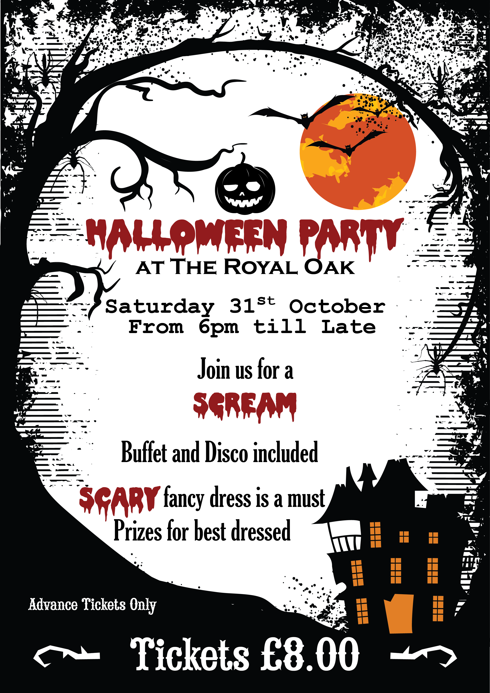

Welcome

The Royal Oak is situated in Wrecclesham, a small village on the outskirts of Farnham Town in Surrey. A family pub that offers delicious home made food, wide range of refreshments, a large garden, with a handmade play area for the kids and table tennis for the more sporting of you, to enjoy in the summer and roaring log fire to warm up to in the winter.
The Royal Oak caters for all tastes and appetites big or small plus numerous vegetarian options. We pride ourselves on producing consistently delicious homemade food at a reasonable price. We provide a very relaxed atmosphere in a beautiful country pub that dates back to 1609. We can cater to all your needs so please feel free to contact us with any requests.
Families, Children, Dogs & Coach Parties are all welcome.
Events
Halloween Party!
Halloween Party at the Royal Oak. Join us for a scream from 6 PM till Late. Scary costumes mandatory. Buffet & Disco provided. £8 Advanced Tickets Only.

Click to enlarge
Sunday Roasts!
Delicious Sunday Roast, choose from rare topside of beef, roast pork and crackling, roast turkey or a slice of all three!
We also serve a smaller portion too! Veggie roast and full menu available. We serve food from 12-9:30pm on Sunday's and would definitely recommend booking if you would like a table between 12-4pm.
Royal Oak Burger Thursdays!
Homemade Beef Burger or Lamb Burger £5.50 Add the following toppings: Cheddar, Bacon, Mushrooms, Caramelised Onions, Egg, Onion, Jalapenos, Gherkins 50p Goats Cheese, Brie, Blue Cheese 75p
Aberdeen Angus Wednesdays!
Our Delicious Aberdeen Angus 8oz Steak for £12.50 including a sauce
OR
£7 for a 4 oz small portion.
Quiz Nights!
Quiz Night Every Sunday 7:45pm. Winners take all! Wine prize for runners up. £1 Entry.
Find Us
The Royal Oak is situated in the village of Wrecclesham approx 1 mile from Farnham Town Centre on the A325 close to Birdworld and Alice Holt Forest Activity Centre.
Out & About
There are some exciting areas for you to explore around The Royal Oak!
- Birdworld 1 mile up the road from the pub. Next to Birdworld is Forest lodge Garden Centre.
- Alice Holt Forest about 2 miles up the road. There is a selection of walking and mountain biking here as well as Go Ape – a Treetop Adventure.
- Farnham Town Centre just 1.5 miles away.
- Just up the road in the village of Churt is The Sculpture Park which is a must see and great walk around.
- Frensham Ponds for dog walking and relaxing on the sand is also just down the road.
404 - Page not found
Somthing has gone wrong, please
click here to return to the website
{kind=link}